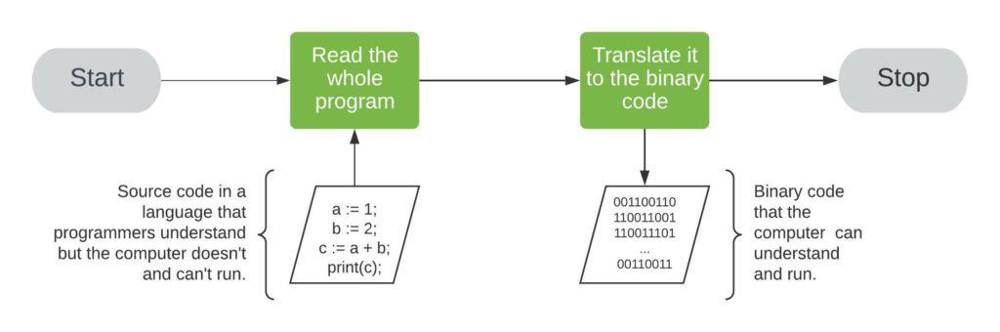
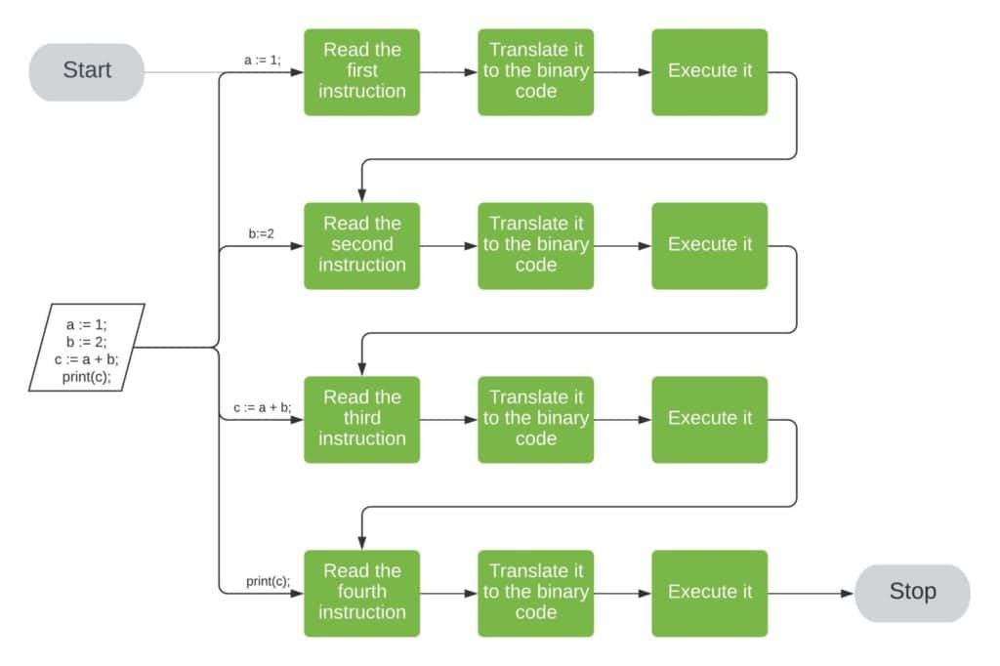

A számítógépes program lényegében olyan
utasítások (instruction) összessége, amelyek
megmondják a számítógépnek, hogy mit kell
tennie. Tekintsd úgy, mint a számítógép által
követendő receptet. Ezek az utasítások egy
programozási nyelven íródnak, amely egy erre a
célra kialakított speciális, ember által
olvasható nyelv.
A számítógépes program utasítások sorozata vagy
halmaza egy programozási nyelven , amelyet a
számítógép végrehajthat.
Az utasítások a legegyszerűbb formájukban olyan
útmutatások vagy parancsok halmazai, amelyeket
valakinek vagy valaminek adunk egy adott feladat
elvégzésére.
Az ember által olvasható formában lévő
számítógépes programot forráskódnak (source
code) nevezzük.
A forráskód végrehajtásához egy másik
számítógépes programra van szükség, mert a
számítógépek csak a saját gépi utasításaikat
tudják végrehajtani.
Ezért a forráskód lefordítható gépi utasításokká
a programozási nyelvre írt fordító (compiler)
vagy értelmező (interpreter) segítségével.
Az eredményül kapott fájlt futtatható
állománynak (executable) nevezzük.
A számítógépes programok úgy működnek, hogy
utasítássorozatot hajtanak végre meghatározott
sorrendben. Ezeket az utasításokat a számítógép
központi feldolgozó egysége (CPU) dolgozza fel,
amely értelmezi és végrehajtja az egyes
parancsokat. A program kölcsönhatásba léphet
adatokkal, a felhasználótól származó
bemenetekkel vagy más programokkal a feladatai
végrehajtása érdekében.
A számítógépes programok különféle funkciókat
szolgálhatnak ki , az összetett számításoktól és
adatfeldolgozástól a hardvereszközök vezérléséig
és az olyan alkalmazások futtatásáig, mint a
szövegszerkesztők, webböngészők és játékok.
Lényegében a számítógépes programok lehetővé
teszik a számítógépek számára feladatok
végrehajtását és problémák megoldását.
Mi a különbség a fordított (compiled) és az értelemezett,
interpretált (interpreted) nyelvek között?

A fordított (compiled) nyelvek olyan
programozási nyelvek, amelyeket géppel olvasható
utasításokká kell lefordítani fordítóprogramok
(compiler) segítségével, amelyek olyan
programok, amelyek az ember által olvasható
forráskódot konvertálják, mielőtt bármilyen
kódot végrehajtanának. A program egy
végrehajtható fájlt generál, majd a lefordított
programot végrehajtásra átadja a célgépnek.
A fordított (compiled) nyelvek közvetlenül gépi
kóddá alakulnak, amelyet a processzor
végrehajthat. Ennek eredményeként általában
gyorsabb és hatékonyabb a végrehajtásuk, mint az
értelmezett nyelveknek. Ezenkívül a
fejlesztőknek nagyobb irányítást biztosít a
hardveres szempontok, például a memóriakezelés
és a CPU-használat felett.
A fordított nyelveknek építési (build) lépésre
van szükségük, először manuálisan kell
lefordítani őket. Minden alkalommal újra kell
építeni (rebuild) a programot, amikor valamit
módosítunk rajta.

Az értelmezett (interpreted) nyelvek olyan
programozási nyelvek, ahol az utasítások
nincsenek előre lefordítva a célgéphez közeli
géppel olvasható formában. Ezeket a nyelveket
inkább egy értelmező segíti. Az interpreter egy
olyan program, amely a magas szintű, ember által
olvasható forráskódot alacsony szintű, géppel
olvasható célkóddá alakítja sorról sorra,
miközben az értelmezett program fut.